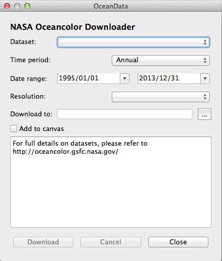

Oceancolor Data Downloader v1.0
QGIS plugin to download data from NASA Oceancolor
What it does
This is a QGIS Plugin which allows easy download of oceancolor and sea surface temperature data from NASA Oceancolor.
It downloads either global level 3 mapped chlorophyll-a concentrations or sea surface temperatures within a defined time range, and resolution. The data is saved in GeoTiff format and can be added to the QGIS canvas once downloaded.
The data
All data is sourced from NASA Oceancolor. Full details on the input data can be found here, and includes algorithm descriptions.
The plugin currently provides access to three datasets:
- MODIS AQUA CHL-a concentration
- SeaWiFS CHL-a concentration
- MODIS AQUA Night Sea Surface Temperatures
Installation
The plugin requires QGIS version 2.0 or higher. It can be installed via the Plugin Manager.
Navigate to
Plugins > Manage and Install Plugins...Click
Settings-
If it isn't already setup, add the Official QGIS plugin repository:
http://plugins.qgis.org/plugins/plugins.xml Click on
Newto see all newly available plugins.Install the plugin, named Oceancolor Downloader.
Using the plugin
-
 Locate this icon on the toolbar and click it to open the plugin.
Locate this icon on the toolbar and click it to open the plugin.

Select a dataset, a time period, a date range and a download path. Select whether you wish to add the composite to the map canvas.
Click Download
If you have chosen to add the data to the canvas, it will appear styled once the GeoTiff is created. Sea surface temperature data will also include a seperate quality grid, but this will not be added to the canvas.

Future developments
We are currently developing new features and working to improve existing ones. A selection of features we are looking to include in a future release are as follows:
- Alternative output file formats
- Options to subset output data to a lat/long bounding box
- Other datasets, such as Net Primary Production
- Progress bar
- 'Cancel Download' button
- Warnings/notifications on amount of data selected to download
Acknowledgements
The plugin was developed by the Mapping and Geographic Information Centre at British Antarctic Survey.


If using this plugin for work towards a publication, please cite: